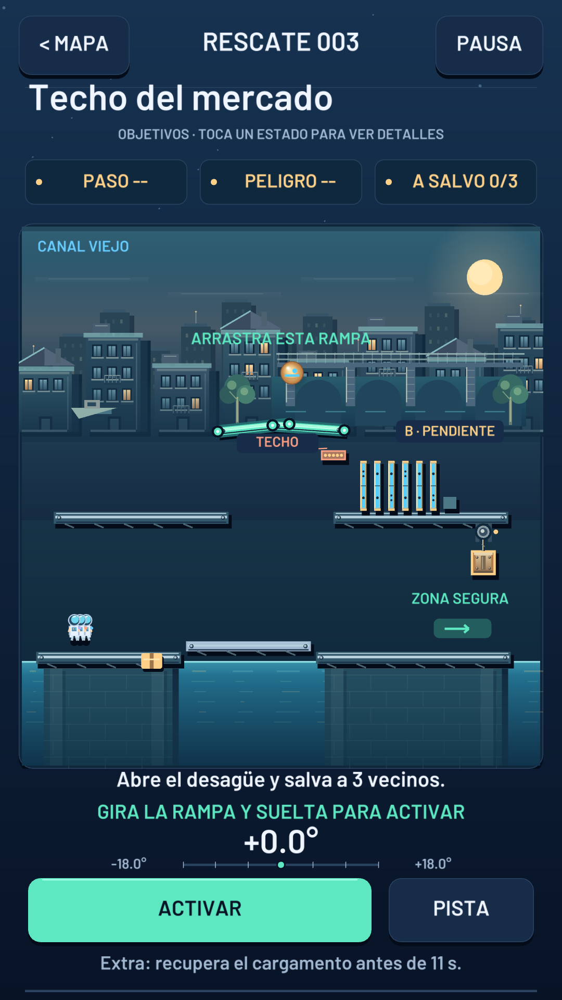
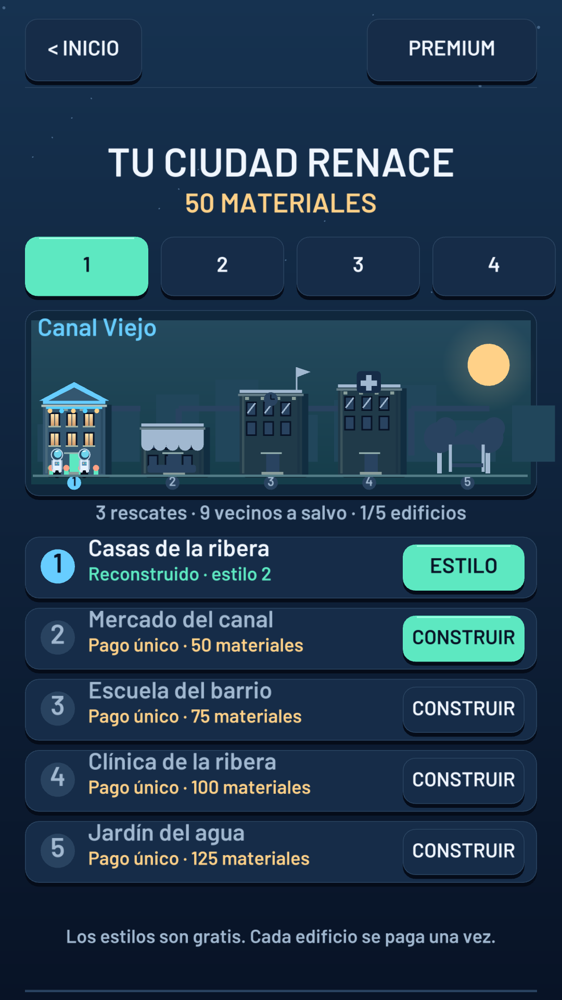
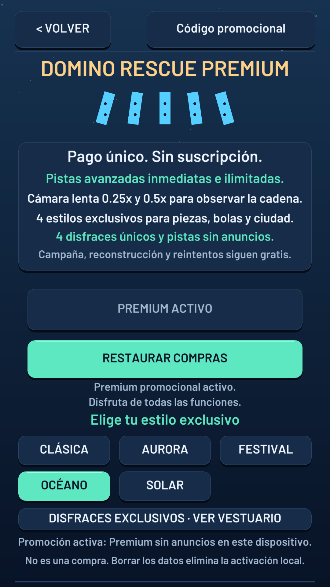
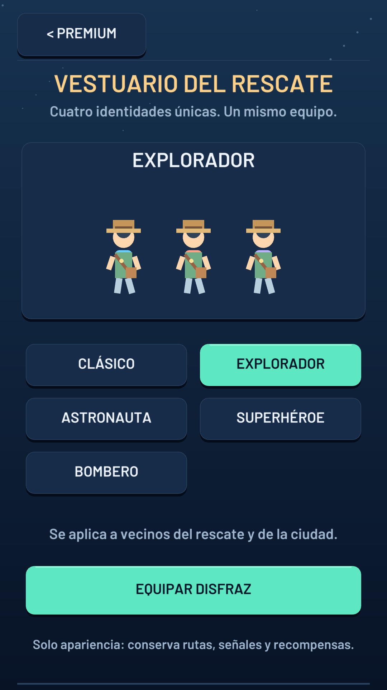
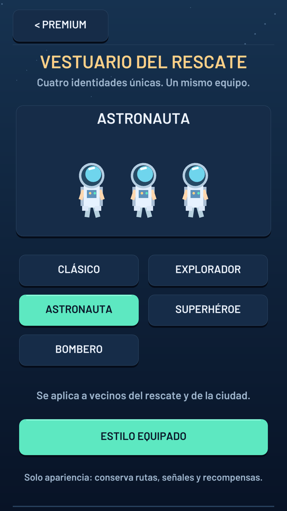
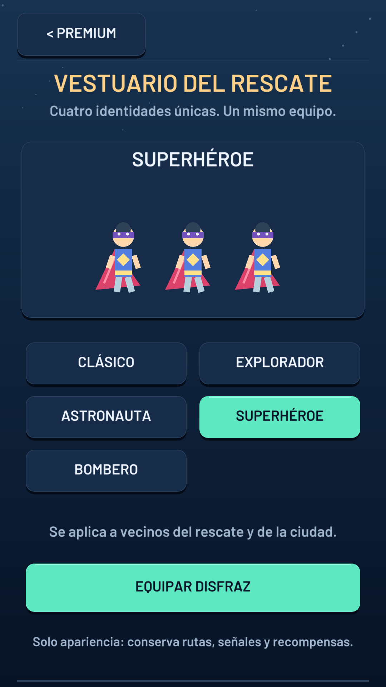
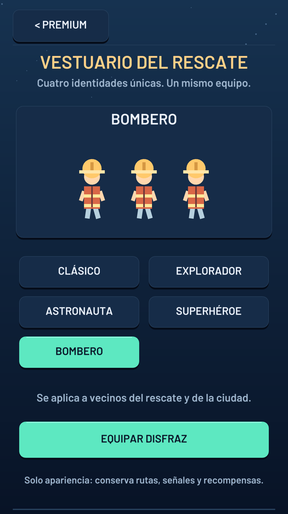
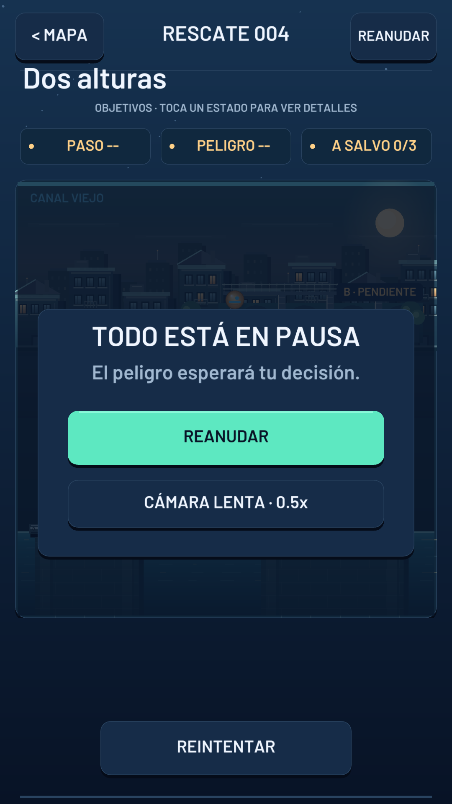

01 / OBSERVA
Lee el escenario.
Localiza a las personas, la zona segura y las piezas que conectan el recorrido. Puedes pensar antes de ponerlo en marcha.
Un pequeño movimiento. Un gran rescate.
Gira una rampa. Activa los dominós. Conecta mecanismos y abre el camino a un rescate que empieza contigo.
Un juego de lógica para Android · Anuncios voluntarios para obtener ayuda y una compra opcional de Premium.


Fácil de entender. Satisfactorio de resolver.
Cada escenario es una pequeña máquina de rescate. Observa las rutas, ajusta el mecanismo y sigue la reacción: una bola mueve la primera pieza; las siguientes pueden abrir un paso o accionar un desagüe.
Localiza a las personas, la zona segura y las piezas que conectan el recorrido. Puedes pensar antes de ponerlo en marcha.
Prepara la rampa o el mecanismo del nivel. Ese movimiento pone en marcha la cadena de dominós y contrapesos.
Observa si la cadena completa los objetivos. Si algo falla, ajusta tu idea y vuelve a intentarlo; las pistas te ayudan a avanzar.
Tu progreso tiene un lugar.
Completar rescates también significa avanzar en la reconstrucción. Regresa a la ciudad, revisa tus recursos y recupera sus espacios.
Así se ve. Así se juega.
Ocho capturas reales de la versión 1.0. Toca cualquiera para verla en detalle; las funciones Premium se identifican debajo.
Mecanismos, dominós y rutas conectadas.
Rescates que se convierten en reconstrucción.

Pistas, estilos y disfraces en un solo pago.

Un estilo para tu próxima aventura.

Dale al equipo un aire espacial.

Viste al equipo para un gran rescate.

Una identidad de rescate inconfundible.

Observa la cadena con cámara lenta Premium.
Antes de tu próximo rescate.
Elige una pregunta para conocer mejor el juego.
No. La campaña, la reconstrucción y los reintentos son gratuitos. Premium es una compra opcional para las ventajas y apariencias indicadas en esta página.
La primera pista es gratuita. Puedes obtener ayuda adicional al reintentar y, cuando esté disponible, completar voluntariamente un anuncio para recibir la pista avanzada. Premium ofrece pistas avanzadas inmediatas sin anuncios.
Puedes jugar los rescates y usar la ayuda gratuita sin conexión. Los anuncios, las compras y su restauración requieren internet. El acceso Premium de pago necesita reconectarse periódicamente para renovar su verificación.
No. Es un pago único gestionado por Google Play. Revisa el precio que aparece en el juego antes de confirmar la compra.
Abre la pantalla Premium y pulsa «Restaurar compras» con conexión a internet y la misma cuenta de Google Play que utilizaste al comprar. Si necesitas ayuda, contacta con soporte sin enviar contraseñas ni datos bancarios.
El progreso se guarda en el dispositivo. Tenlo en cuenta antes de borrar los datos de la aplicación o desinstalarla. Restaurar una compra Premium no equivale a recuperar el progreso de las partidas.
La aplicación toma inicialmente el idioma del dispositivo y dispone de textos en español e inglés.
En los ajustes del juego encontrarás el acceso de privacidad de los anuncios para gestionar las opciones que estén disponibles en tu región. Puedes consultar también la política de privacidad desde el enlace al final de esta página.
¿Una duda sobre un rescate, Premium o el funcionamiento del juego? Escríbenos con el modelo de tu teléfono, la versión instalada y una descripción de lo ocurrido.
Conoce el tratamiento de datos, los servicios de terceros y las vías de contacto para tus consultas de privacidad.